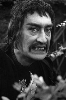

Also known as:Golia e il cavaliere mascherato (original title)
Country:Italy, 86 minutes
Spoken languages:
Genres:Adventure, Action, Drama, Romance
Director(s):Piero Pierotti
Writer(s):Luciano Martino, Ernesto Gastaldi, Arpad De Riso, Piero Pierotti
Video Codec:Unknown
Number: 1614

Certification:
Storyline:
In 16th century Spain, Don Francisco reluctantly betroths his daughter, Blanca, to the arrogant Don Ramiro in order to preserve the lands in the family estate. Then Don Juan, Don Francisco's nephew and Blanca's true love, returns from the war in Flanders. Don Juan dons a mask and joins with a gypsy band led by Estella to fight against the forces of Don Ramiro.
Cast: 

Medium: Original DVD,
Comments: Part of: Wrath of the Sword - 20 movie collection
Loaned: No
Aspect ratio: Unknown